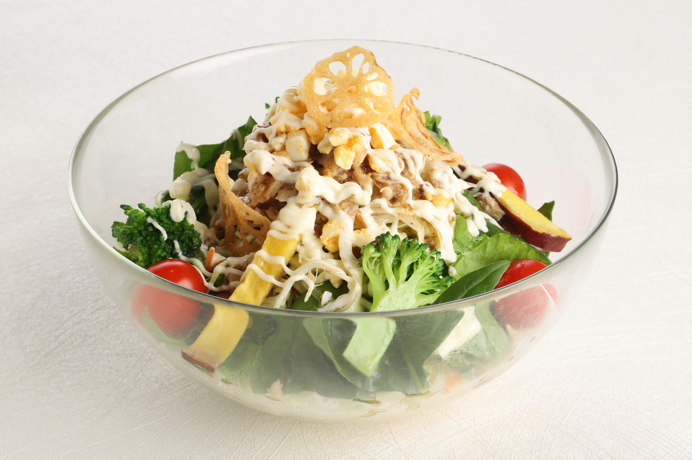

scroll
熊本県美里町の地名「小筵（こむしろ）」から名付けられた
KOMUSHIRON☆CAFE。
地元の産直市場「まほろばの郷」などから届く新鮮な野菜と、
この土地ならではの食材を使ったパスタや手作りスイーツをご用意しています。
レンガ風の建物から見える風景を感じながら、 本格イタリアンをゆっくりとお楽しみください。 昼も夜も、あなたの特別なひとときに寄り添います。

「食べるときに一番美味しい状態」へ。細麺を丁寧に茹で上げ、 素材の味を最大限に引き出したパスタをどうぞ。


★★★★★
「お店も料理もお洒落で、まるでイタリアにいるみたい。コムシロンパスタは他では食べられない味で、また絶対来ます！」
★★★★★
「テラス席で里山の景色を眺めながら食べるパスタは最高。スタッフさんも温かくて、ランチに通い続けています。」
★★★★☆
「手作りのキャラメルチーズケーキをテイクアウトしたら家族に大好評！スイーツ目当てでもまた行きたいお店です。」
| 月・水 | 11:00 〜 14:30（L.O.） |
|---|---|
| 木・金 | 11:00 〜 14:30（L.O.）/ 18:00 〜 20:00（L.O.） |
| 土・日・祝 | 11:00 〜 14:30（L.O.）/ 17:30 〜 20:00（L.O.） |